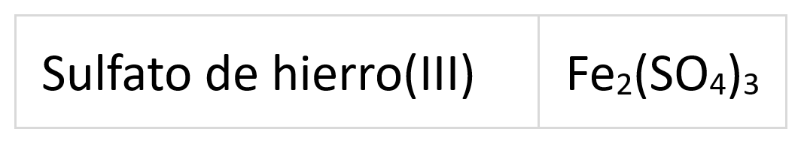
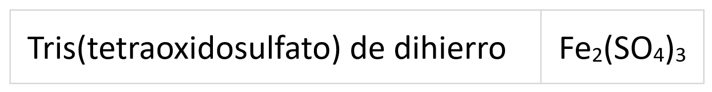
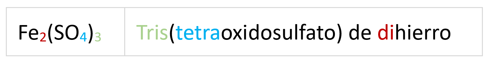
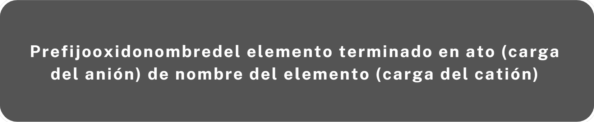

Las oxosales son compuestos que se pueden considerar derivados de los oxoácidos al sustituir los hidrógenos del ácido por un metal. Es decir, están formadas por un anión heteropoliatómico y un catión:
- El anión procede de un ácido que ha perdido los hidrógenos y por tanto tendrá tantas cargas negativas como hidrógenos tuviera el ácido.
- El catión normalmente es un metal.
- La suma de todas las cargas tiene que ser cero.
- Cuando existen repetición del anión se utiliza paréntesis con el subíndice correspondiente.
El cromo y el manganeso al igual que pueden oxoácidos, también pueden formar oxosales en sus estados de oxidación más altos (cromatos, dicromatos y permanganatos).
Nombre vulgar o tradicional aceptado
Para formular
A partir del nombre tradicional o vulgar se obtiene la fórmula de una forma fácil. Por una parte escribimos el catión con su carga (normalmente nos vendrá en números romanos y si no es así se tratará de un elemento cuyo estado de oxidación debamos conocer por ser único); a continuación formulamos el oxoanión (te recuerdo aquí como se hace). Intercambiamos los estados de oxidación para neutralizar el compuesto y se simplifica si es necesario.
Ejemplo: Sulfato de hierro(III)
Hierro (III): Fe3+
Sulfato: el azufre tiene 2, 4 y 6 de estados de oxidación, el sufijo -ato se corresponde con el 6, le añadimos 4 O2- para obtener el oxoanión: (SO4)2-
Intercambiamos las cargas (sin signo). En este caso no es necesario simplificar:

Para nombrar
La nomenclatura de forma tradicional es bastante complicada como vimos al nombrar de esta forma los oxoaniones, debido, a como comenté, a la variedad de estados de oxidación puestos en juego. Veamos por ejemplo el caso de la sal AgNO3.
Como el estado de oxidación de la plata es +1 y el del oxígeno -2, la única opción para el nitrógeno es +5, que se corresponde con el sufijo -ato. Luego se trata del Nitrato de plata.
Pongamos u ejemplo un poco más complicado: NiPO4. En este caso debe haber una simplificación puesto que el níquel tiene por valencias +2 y +3, que no aparecen. Supongamos que actúa con +2; si tenemos en cuenta que el oxígeno actúa con -2 y teniendo en cuenta la neutralidad del compuesto al fósforo le correspondería +6 lo cual no es correcto. Si usamos +3 para el niquel al fósforo le corresponde +5, estado de oxidación típico del fósforo. Teniendo en cuenta que los compuestos de fósforo son orto, el compuesto recibe el nombre de Fosfato de níquel(III)
Nomenclatura de composición
Para formular
A partir del nombre:
- Se escribe la fórmula al revés de como aparece en el nombre, es decir se comienza por el catión a la izquierda y el anión a la derecha.
- Se escriben con subíndices los prefijos que se indican en el nombre.
- Si el nombre del anión está entre paréntesis, en la fórmula también se escribe entre paréntesis con el subíndice que indica el número de aniones.
- Si es posible los subíndices del anión y catión se simplifican.
Ejemplo:

Para nombrar
A partir de la fórmula:
Se escribe, en caso de que existan varios aniones, el prefijo que indica su número (bis, tris, tetrakis, ...), a continuación el prefijo que indica el número de oxígenos seguido de la palabra oxido (sin tilde) y unido a éste la raiz del elemento acabado siempre en ato. se cierra el paréntesis y se coloca el prefijo que indique el número de cationes seguido del nombre del elemento.
Ejemplo:

Nomenclatura de adición (no la veremos este año)
Para formular
A partir del nombre de adición.
- Se escribe la fórmula como se indica en el nombre pero empezando al revés, primero se escribe el catión seguido del anión.
- Se intercambian las cargas del anión y de catión sin signo, de forma que la carga total del compuesto sea nula.
- Si es posible estos subíndices se simplifican.
Ejemplo:
Tetraoxidosulfato(2-) de hierro(3+)
1. Se escribe el catión seguido del anión: Fe3+ SO42-
2. Se intercambian las cargas del anión y de catión sin signo, de forma que la carga total del compuesto sea nula.
Fe3+ SO42- → Fe2 (SO4)3
Para nombrar
A partir de la fórmula:
1. Se escribe el nombre del anión con el número de carga entre paréntesis.
2. A continuación el nombre del catión también con su número de carga entre paréntesis.
3. La carga del catión no se especifica si se sobreentiende.

Ejemplo:
Fe2 (SO4)3
1. Se escribe el nombre del anión con el número de carga entre paréntesis seguido de la preposición "de": Tetraoxidosulfato(2-) de
2. Nombre del catión con su número de carga entre paréntesis: hierro(3+)
Tetraoxidosulfato(2-) de hierro(3+)